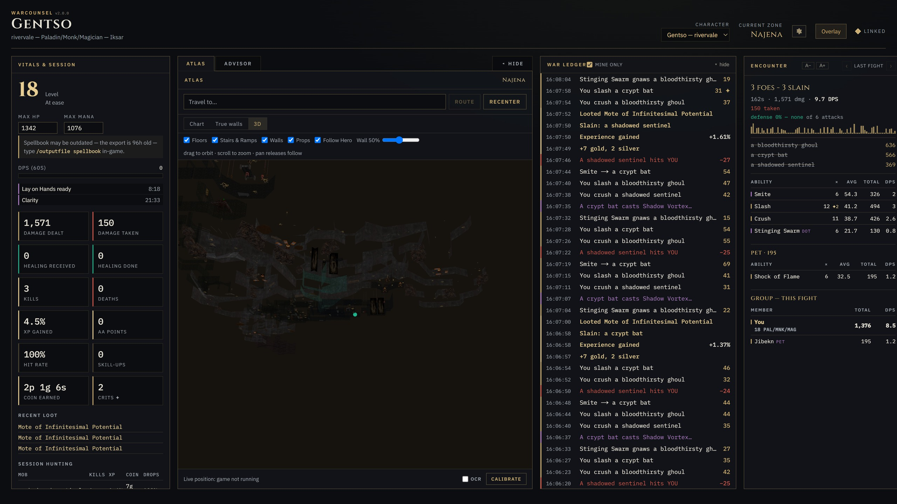
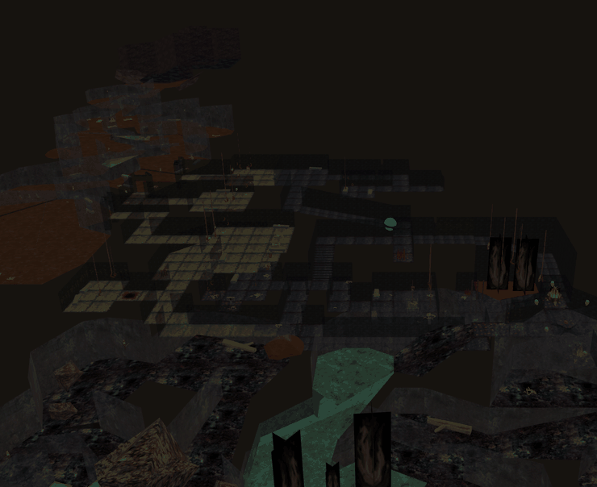
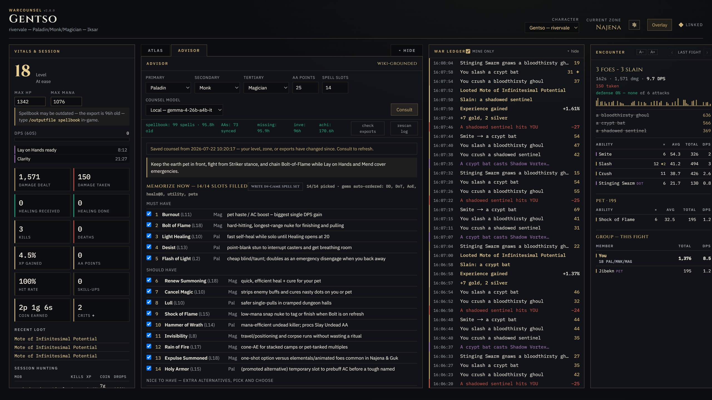
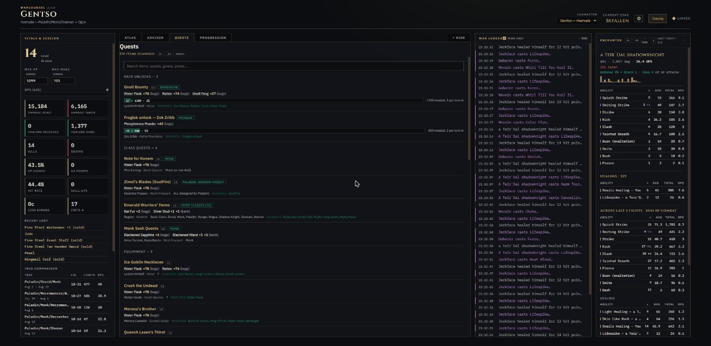
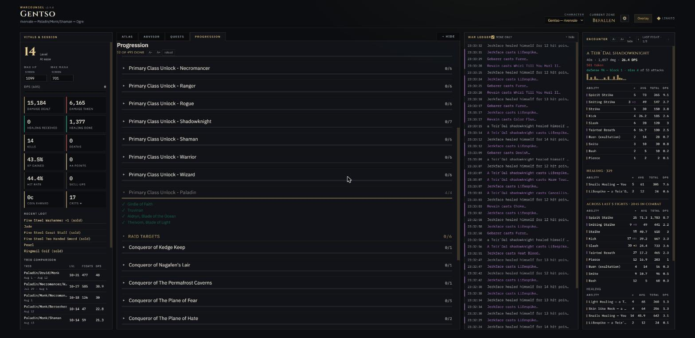
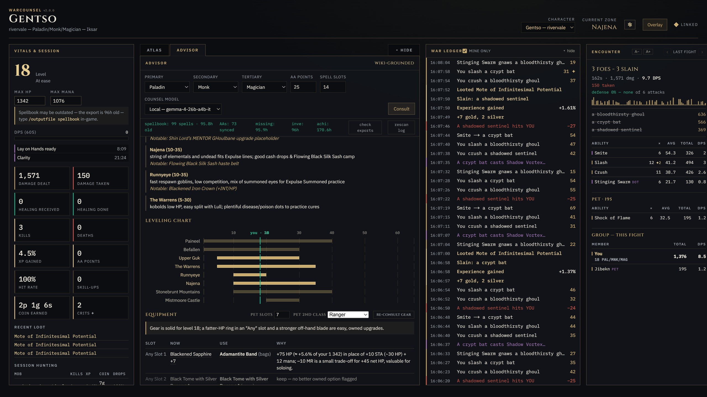

EverQuest Legends companion
Your combat log,
read properly.
Everything below is built out of the text file your client already writes when you type
/log on. A live HUD, a damage meter over the game, 3D zone maps mined from your own install,
and spell and gear counsel checked against your actual spellbook.
It reads. It never plays.
Forty-three seconds of one fight, as your client wrote it
From those seven lines WarCounsel knows: 149 damage across two swings, one critical · 17 taken · a stun that landed on the mob you were actually on · 1.019% of a level · and a wizard mid-cast you still have time to answer. Now multiply by a night of them.
The meter
Numbers your group can argue about
Per-ability hits, crits, and the tags EQL stacks beside them — Riposte, Slay Undead, Finishing Blow — kept whole instead of flattened into one bool. Everyone in the group gets a damage and DPS row, and every pet gets its own row rather than being folded into its owner, so your "You" matches what their copy shows for you. That is the difference between two meters and one conversation.

Reads this line
The Atlas
Zone charts with a live position dot and hop-by-hop routing — and where a dungeon has no chart, which is most of them, the walls and floors are mined out of the game's own geometry files and drawn in 3D. The camera follows you. Nothing is downloaded; it is your install, read.

/loc.This one comes from a different file
Counsel that has to prove itself
A spell loadout for your exact trio and level, an AA plan, a vendor shopping list, and gear picks slot by slot — read off your own exports and the wiki. Every suggestion is machine-checked before you see it: owned, legal at your level, not superseded by something better already in your book, and not fighting another pick for the same buff slot — two buffs in one slot overwrite each other, so recommending both wastes a gem. Anything that fails the check is dropped rather than shown. One click writes the result as an in-game spell set.

Reads this line
An overlay you can see past
A compact always-on-top meter over the game: ranked damage bars, draining spell and cooldown timers, session rates, and a banner for the things you would otherwise miss — a mez breaking, a named in the loot you just took, your cast interrupted. Click-through by default; Scroll Lock makes it interactive. Every section switches off, and so does every field inside one.

And the rest of the night
What your bags and your level already know

Quests
Your inventory export joined to the wiki, so a bag of oddments becomes a list of things you can finish — and a search that says plainly whether you are even carrying the item.

Progression
Class unlocks, raid targets, keys and factions read from the game's own achievements export — the game's answer, not a guess inferred from what happens to be in your bags.

Where to hunt
Zones ranked against the community level table, over a chart of the bands around you, so you can see what you are about to outgrow.
What it touches
It reads. It does not play.
Game Jawn and Daybreak do not review, approve or endorse any third-party add-on, including this one. So here is exactly what it does, plainly enough that you can judge it yourself.
- It tails a text file. Your log, plus data files the client already ships — spells, zone names, zone geometry — and the exports
/outputfilewrites. It sends no input to the game and automates nothing. Every action it suggests is one you perform. - No memory, no packets, no injection. Nothing is read out of the game process, and nothing is put into it.
- It writes exactly one file inside the game folder, and only when you press the button: the
[SpellLoadouts]section of yourLO*.ini, so/memspellsetcan recall a suggested bar. It backs the file up first, and the feature is off until you switch it on. - Free and MIT-licensed. No paid tier, no subscription, nothing behind a purchase.
- What leaves your machine: a version check against GitHub, and wiki lookups for item and spell pages. If you plug in an LLM yourself, your character context goes to that provider — run a local model, or none at all, and nothing about your character leaves the machine.
None of this is legal advice. The Terms of Service are the authority, and the risk of using any third-party tool is yours. If you think something here crosses a line, open an issue — I would rather remove a feature than argue about it.
Get it
Three ways in. Most people want the first.
The single .exe
Download, double-click. Nothing else to install — no Python, no Node. Everything works except reading your position off the screen.
The OCR build
The same app plus screen reading, for position data the log never prints. A folder rather than one file, because the image libraries are large.
From source
Run the installer script; it offers to fetch Python and Node, and finds your game folder. The only route on Mac and Linux, where the game runs under Wine.